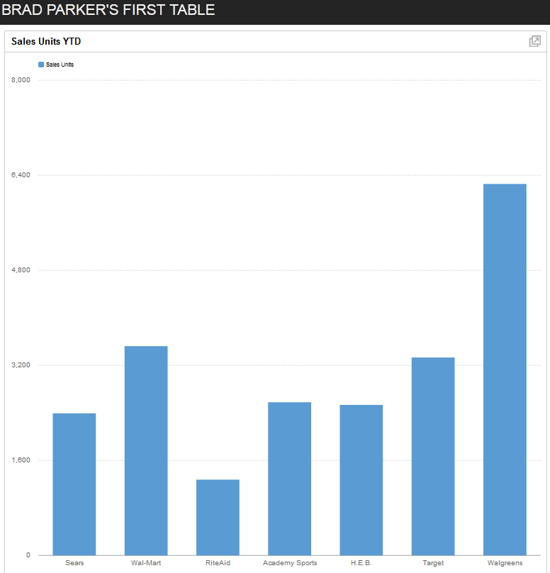

Dashboards
OK, now that we have learned how to setup a database connection and have an overview of the
types of output we can get, let's look at how we can extend the built in classes provided by the
library.
- StandaloneDashboard
Default single wrapper. You would link to a separate PHP page to display.
- EmbeddedDashboard
Add to your existing HTML or PHP page. Probably the most popular Dashboard to use.
- TabbedDashboard
Multiple Dashboards are filed in tabs. This is either Embedded or StandAlone.
These three classes are extensions of the RazorFlow baseclass, Dashboard.
We need to extend these classes as below:
SampleDashboard can be any name you choose but extended RazorFlow class has
to be one of the three above.
Final Code
Here's my entire sample code.
We've already covered the Require statement, Class Extend, and the Database Portion.
Code Explanation
The complete ChartComponent methods reference is
here
and I'll give my summary.
- buildDashboard()
This is where we add the details of the Component, which could be any of these below.
- ChartComponent
- FormComponent
- GuageComponent
- KPIComponent
- TableComponent
- setDashoardTitle()
Pick a string to describe the dashboard (not the component).
- new ChartComponent()
Creates a new component of the above list. You can choose the variable id ('c1')
of the component. You won't need to reference it later in this coding example, but is needed on more advanced features such as drill-down capabilities.
- setCaption()
Here's where you set the component title.
- setDimensions()
Phyisical size of the Chart. This has nothing to do with how many records to display.
- getSales()
This is where we run our database query and assign the results to the $top_customer object.
- setLabels()
This names the X-axis in the chart. The built-in static method 'pluck utility' pulls out the column values in a record.
In this example, I'm returning every Customers Units Year to Date.
- addSeries()
Here we actually add the data to the chart. First parameter is a unique id for the series that you choose.
Second parameter is the name that will be diplayed on the chart. Third is the data to populate.
- addComponent()
The Component is appended to the Dashboard.
Finally, (outside of the constructor function), we create an instance of the SampleDashboard class called $db.
The renderStandalone method creates the Dashboard with Component attached.
Here's the Final Dashboard.

Adding to your project